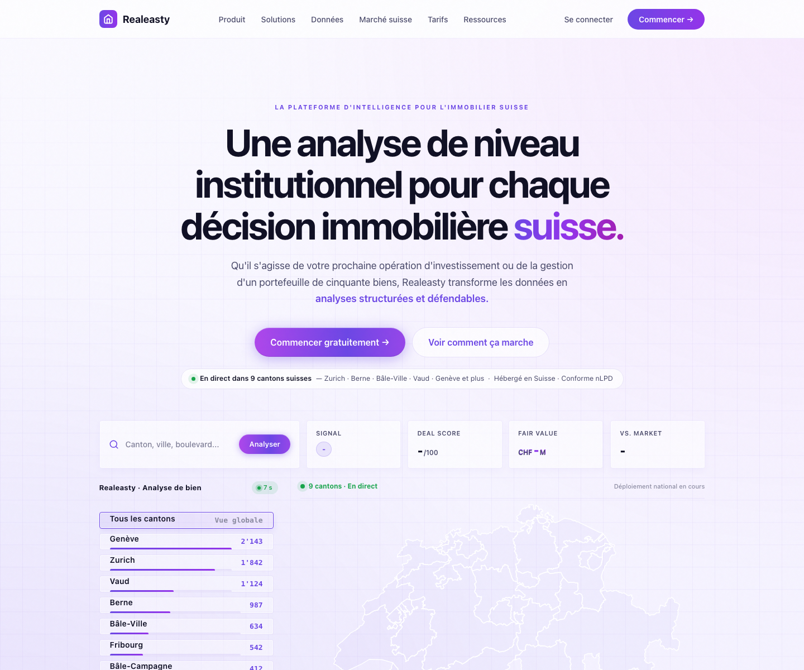

Realeasty
An AI-powered real estate intelligence platform for Swiss property decisions, designed to make institutional-level analysis feel clear, credible, and actionable.

Make complex property intelligence feel trustworthy
Real estate analysis can feel technical and inaccessible, especially when users need to compare regions, signals, fair value, and risk. The challenge was to present an advanced AI product without overwhelming visitors before they understand the value.
A clear story around analysis, speed, and confidence
I structured the page around a direct product promise, then supported it with visible product cues: canton coverage, live-status badges, search input, scoring cards, and a Swiss map preview. The result feels more like a usable intelligence product than a generic SaaS landing page.
Product-Led Hero
The first screen introduces the product category, the target market, and the core value without hiding the interface behind abstract visuals.
Credibility Through Data Cues
Signals like canton availability, speed, scores, and fair-value fields make the promise tangible before a user starts the product.
Conversion-Focused Flow
The page balances confidence-building content with clear calls to start, learn how it works, and understand the market context.
Key takeaways
A sharper AI product narrative
The landing page explains what the product does, who it serves, and why its analysis matters in the first viewport.
Visual proof instead of vague claims
Interface previews and data states make the intelligence platform feel concrete and easier to evaluate.
Designed for trust-heavy decisions
The experience uses restrained UI, precise language, and product evidence to support high-consideration property decisions.